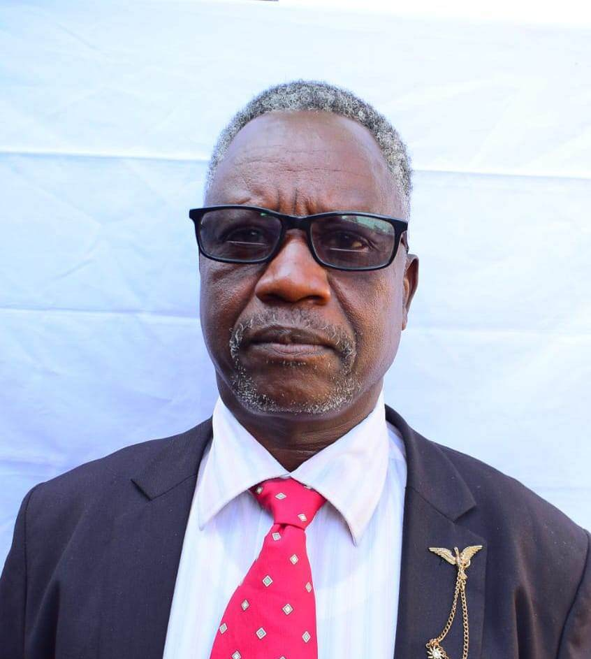

Community Based Organization
One voice can
carry a continent forward.
One Voice Africa is a Community based organization intended to support community health, education and environmental . We support the hardship areas within Kericho county and neighbouring Counties. Our plan is to support community through empowerment
Who We Are
A progressive, community-first organization
One Voice Africa (OVA) is a progressive, community-focused organization dedicated to empowering individuals and fostering sustainable growth across African communities.
By uniting diverse voices and establishing inclusive support structures, we drive long-term impact through tailored initiatives in education, health, community development, and gender-inclusive mentorship.
Explore Our Pillars"One Voice, One Future" — a shared vision for community progress.
Where We're Headed
Our Strategic Direction
Vision
A resilient, self-sustaining Africa
A resilient, empowered, and self-sustaining Africa where every individual has access to quality education, comprehensive healthcare, and equal opportunities for personal and economic growth.
Mission
Champion local transformation
To champion local community transformation by facilitating educational access, expanding health awareness, executing sustainable development projects, and providing transformative mentorship for both young men and women.
Pillars of Impact
Four commitments, one direction
Our work is designed around the conditions communities need to thrive: opportunity, wellbeing, local ownership, and the confidence to lead.
Education
Expanding access to learning resources, vocational training, literacy initiatives, and skill-building workshops that prepare youth and community members for the modern workforce.
Health Care
Promoting community health and well-being through health education drives, preventive care initiatives, medical outreach programs, and advocacy for accessible health services.
Community Development
Implementing impactful local projects that improve socio-economic conditions, promote environmental sustainability, enhance civic participation, and strengthen community resilience.
Gender-Inclusive Mentorship
Guiding both young women and men through tailored leadership programs, life-skills coaching, personal empowerment, and career guidance to cultivate the next generation of leaders.
Our Leadership
Meet the minds driving our mission
Board Chairperson
Mr. Daniel Langat
Pioneering grassroots advocacy, pan-African policy reform, and strategic alliances.
Mr. Daniel Langat serves as the Chairperson of One Voice Africa (OVA), steering the Kenyan-based non-governmental organization toward building a resilient, empowered, and self-sustaining future
With a strong focus on community-first development, he oversees the strategic alignment of the organization's four core pillars: expanding access to quality education, promoting comprehensive health care and preventive outreach, driving sustainable local development projects, and fostering gender-inclusive mentorship for youth. Rooted in the guiding values of unity, integrity, and empowerment, Mr. Langat leads the board in establishing transparent governance and forging impactful grassroots partnerships. Under his leadership, One Voice Africa works to break socio-economic barriers in Kenyan communities, equipping young women and men with the tools, skills, and opportunities needed to lead lasting change under a shared vision of progress..

Mr. Kirui Philemon
Mr. Kirui Philemon serves as the Vice Chairperson of One Voice Africa, supporting executive governance and the strategic rollout of the NGO's core impact programs. Dedicated to grassroots community empowerment, he works to advance educational access, preventive health awareness, sustainable local development, and transformative mentorship across Kenya.

Korir Gilbert
Mr. Korir Gilbert oversees institutional documentation, board correspondence, and strategic communication for One Voice Africa. He ensures seamless administrative coordination across all educational, health, and community outreach programs, upholding the highest standards of transparency and organizational efficiency to drive the NGO's mission forward across Kenyan communities

Lyndah Rono
Mrs. Lyndah Rono leads the financial planning, budget allocation, and fiscal oversight for One Voice Africa. Guided by the core value of integrity, she ensures transparent and accountable management of resources, guaranteeing that funding and community partnerships directly fuel impactful, sustainable grassroots projects in education, health care, and mentorship.
Mrs. Masumuni Jane
Curating scalable skill-acquisition workshops, modern technical pathways, and gender-inclusive mentorship networks.
Moments Together
Our annual AGM
These photos were taken during the annual general meeting, where the One Voice Africa team came together to reflect, connect, and shape the work ahead.
Guiding Principles
What holds us together
Unity
Harnessing collective action and working together under one shared vision for community progress.
Empowerment
Equipping individuals with knowledge, tools, and confidence to lead positive change in their communities.
Integrity
Upholding transparency, accountability, and ethical standards in all our programs and partnerships.
Inclusivity
Ensuring equal support and opportunities for all community members, regardless of gender or background.